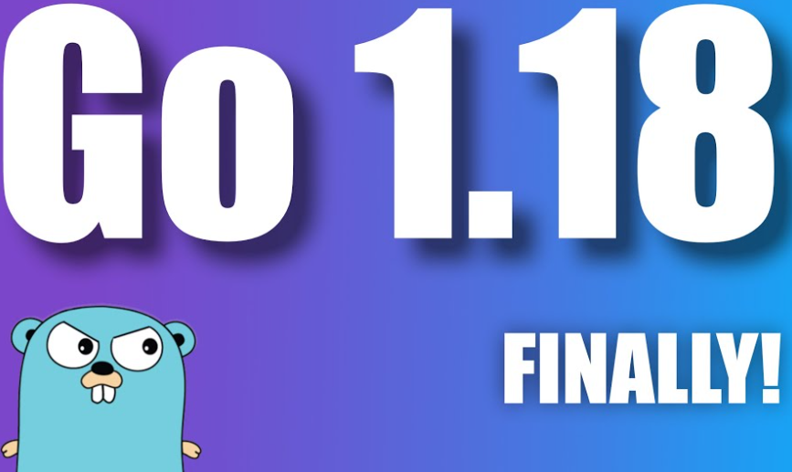

История создания Golang
Язык программирования Golang (также известный как Go) был разработан в 2007 году компанией Google. Основной целью было создание языка, который бы сочетал в себе простоту написания кода, высокую производительность и эффективность для работы с многозадачностью.
Основные этапы развития
- 2007 год: Начало разработки языка.
- 2009 год: Официальный анонс языка.
- 2012 год: Выпуск версии Go 1.0.
- 2022 год: Добавление поддержки generics в Go 1.18.
Таблица версий Go
| Версия | Год выпуска | Основные изменения |
|---|---|---|
| Go 1.0 | 2012 | Первая стабильная версия. |
| Go 1.1 | 2013 | Улучшена производительность и добавлены новые инструменты. |
| Go 1.5 | 2015 | Компилятор переписан на Go, улучшена производительность сборки. |
| Go 1.8 | 2017 | Добавлена поддержка HTTP/2, улучшена производительность сборки мусора. |
| Go 1.11 | 2018 | Добавлена поддержка модулей (Go Modules). |
| Go 1.14 | 2020 | Улучшена производительность и стабильность, добавлены новые функции для модулей. |
|  | 2022 | Добавлены generics (обобщенные типы). |
| Go 2.0 | «Никогда не выйдет» | |